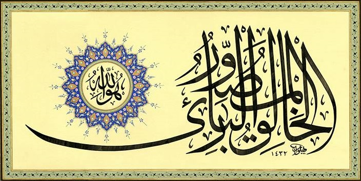
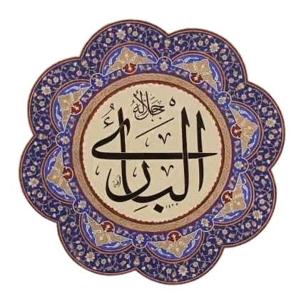
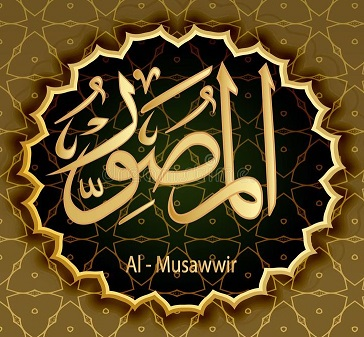

Haşr Suresinin son âyetinde yaratmakla ilgili üç isim var:

59:24
huvallâhul-ḣâlikul-bâriul-musavvir
O Allah’tır, yaratan, var eden, şekil veren
Baştaki "el-Hâlık" kelimesini önceki gün çalışmıştık. Bu kelimelerin muhtelif meallerdeki 10 farklı çevirisi: el-hâlik, el-bâri, el-musavvir Yaratan, var eden, biçim veren Yaratan, var eden, şekil veren Yaratan, yoktan var eden, sûret veren Yaratan, yoktan var eden, şekil veren Yaratan, farklı yaratan, şekil veren kuranmeali.com Creator, Inventor, Fashioner Creator, Shaper, Fashioner Creator, Evolver, Bestower of forms Creator, Designer, Modeler Creator, Inventor, Bestower of forms corpus.quran.com
"el-Bâri" kelimesi, Türkçe berâat ve berî olmak ile aynı kökten türetilmiş, sonunda ‘ayn değil hemze var.

Muhtelif türevleri 31 kere kullanılan bir kökten gelmesine rağmen, Allah anlamında bir tek şu âyette geçiyor:
2:54
żâlikum ḣayrun lekum ‘inde bâriikum
Böylesi, Yaratıcınız katında sizin için hayırlıdır
"el-Musavvir" kelimesi, Türkçe sûret ve sûr ile aynı kökten türetilmiş, sad ile yazılır. (sin ile yazılan sûre kelimesinin kökü farklı) Söz konusu 59:24 dışında ancak fiil halinde kullanılmış. 
Şu âyet, "tasarlama" anlamına yer bırakmıyor:
7:11
velekad ḣaleknâkum śumme savvernâkum
Sizi yarattık, sonra size biçim verdik
Çünkü "tasarlama" olsaydı, yaratmadan önce gelirdi.